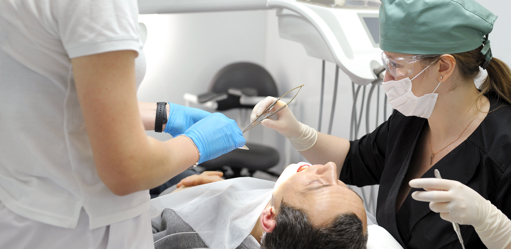
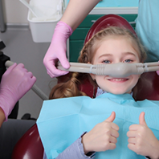

Sedation Dentistry Hays
Experience Genuine Calm & Comfort with Sedation Dentistry

Sedation dentistry is a great option for patients who feel anxious or nervous about dental treatments. It involves using sedative medication to help you relax and stay calm during your visit. Sedation is especially helpful for patients with severe dental anxiety and/or past negative experiences at the dental office. Our dentists may also recommend sedation dentistry if you have difficulty becoming numb or have a sensitive gag reflex. To learn whether you could benefit from sedation dentisttry in Hays, please call our office today. We offer several sedation options!
Why Choose Lifetime Dental Care for Sedation Dentistry?
- Friendly, Welcoming & Experienced Dental Team
- We Accept & Maximize Dental Insurance
- Streamlined & Faster Care with the Latest Dental Technology
Nitrous Oxide Sedation
This mild sedative is mixed with oxygen and inhaled at the beginning of your treatment. It helps you feel relaxed, and one of the biggest advantages is that it wears off in a matter of minutes once your dental care is complete.
What Is Nitrous Oxide Sedation?
Nitrous oxide, also known as laughing gas, is a nitrogen-oxygen mixture that you inhale through a nose mask during your treatment. As you breathe in the nitrous oxide, you will experience a relaxed or even euphoric sensation. Nitrous oxide can help you feel calm and at ease throughout your treatment. Nitrous oxide sedation is very safe! The effects will wear off within just a few minutes after we remove your nose mask, and you can legally and safely drive yourself home after your appointment.
Who Is a Good Candidate for Nitrous Oxide Sedation?

Nitrous oxide is a good option for any of our patients who suffer from dental anxiety or dental phobia. If you feel anxious because you are receiving a treatment you have not experienced before, or if you simply dislike the sounds and sights of the dental office, we may recommend nitrous oxide to help you feel more relaxed. We’re happy to discuss any concerns before your visit so we can help you feel more comfortable during your treatment.
IV Dental Sedation
Administered intravenously, IV sedation allows our dentists to provide quick and adjustable sedation to keep you comfortable. You will remain conscious but may feel so relaxed that you fall asleep and have limited memory of the procedure.
How Does IV Sedation Work?
IV (intravenous) sedation is administered directly to the bloodstream and is sometimes known as sleep dentistry or twilight sleep. IV sedation is a conscious sedation treatment, meaning that you should remain awake and aware enough to respond. You may experience partial or total memory loss during treatment due to the high levels of relaxation this treatment provides.
Who Is a Good Candidate for IV Sedation?
IV sedation is an excellent treatment option for patients who struggle with dental anxiety or phobia, or who require lengthy dental treatments. When you visit us for your initial consultation, our dentists will discuss your medical history and your dental needs to determine if IV sedation is the right option for you, and what level of sedation you should receive. You will be carefully monitored throughout your entire treatment to ensure your safety and comfort.
IV Sedation Aftercare
When you receive an IV sedation treatment, you will need to bring someone with you to drive you home following your appointment. You will not be able to drive for several hours after you leave our office and should remain at home until the effects of sedation wear off.
What Is Dental Anxiety & How Can It Impact Your Health?
Dental anxiety and dental phobia describe the degrees of fear, anxiety and stress that patients experience when visiting the dentist. In the most extreme cases of dental phobia, patients may experience panic attacks and nausea both before and during their appointment. This level of anxiety can cause people to intentionally avoid necessary dental care, including routine cleanings and exams.
Avoiding regular dental care can have major consequences. If you have any existing dental problems, they will not be diagnosed and treated. For example, untreated cavities can lead to more severe decay, toothaches and even tooth loss. Gum disease can cause gum recession and tooth loss.
Sedation dentistry will help you to deal with your anxiety and phobia and receive the care you need without experiencing fear or discomfort. There are several different levels of sedation to meet your needs. Light sedation typically uses nitrous oxide, while moderate and deeper levels of relaxation can be reached with oral or IV sedation methods.
Sedation Dentistry FAQs
How does sedation dentistry work?
When you receive a sedation treatment, our dentists will consult with you to determine which option is the best for you and will provide instructions and information on how the treatment will proceed. Your treatment will keep you conscious, but relaxed, allowing you to respond to any instructions we give you.
Will I fall asleep with sedation dentistry?
Possibly. While we offer sedation dentistry that does not intentionally cause unconsciousness, some patients become so relaxed that they fall asleep. Most patients do experience some memory loss during the procedure even when remaining awake due to the high levels of relaxation provided.
What side effects can I expect after sedation dentistry?
Drowsiness following your appointment is the most common side effect of sedation dentistry. Some patients also experience nausea as well. Most patients will feel fine after eating and drinking.
Is sedation dentistry safe?
Yes. Sedation dentistry requires rigorous training and certification to be a provider, and our dentists will address any potential issues during your initial consultation. You will be carefully monitored during your appointment to ensure that your treatment runs smoothly.
Can I drive after an appointment with sedation dentistry?
It is required that you bring someone with you to drive you home following your appointment. Our dentists will let you know at what point following your treatment you can begin driving again.
How much does sedation dentistry cost?
The cost of your treatment will depend on the number of appointments you require and the type of sedation you receive. Our dentists can provide a cost estimate following your consultation.